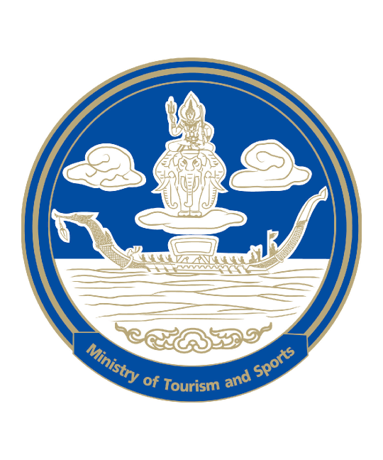
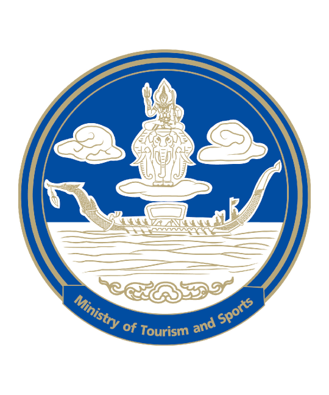
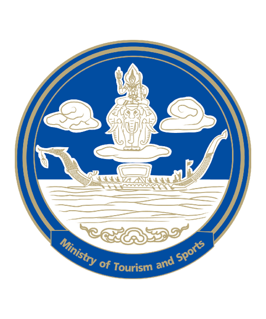

ตั้งแต่วันที่
ลงทะเบียน เฟส 2
ตั้งแต่วันที่ 24 ต.ค. 62 วันละ 2 รอบ เวลา 6.00 น. และ 18.00 น.
(จำกัดจำนวนผู้ลงทะเบียนรอบละ 5 แสนคน รวม 1 ล้านคนต่อวัน)
มาตรการส่งเสริมการบริโภค
ในประเทศ “ชิมช้อปใช้”
เงื่อนไขการเข้าร่วมมาตรการ


 

ลงทะเบียน เฟส 2
ตั้งแต่วันที่ 24 ต.ค. 62 วันละ 2 รอบ เวลา 6.00 น. และ 18.00 น.
(จำกัดจำนวนผู้ลงทะเบียนรอบละ 5 แสนคน รวม 1 ล้านคนต่อวัน)
มาตรการส่งเสริมการบริโภค
ในประเทศ “ชิมช้อปใช้”
